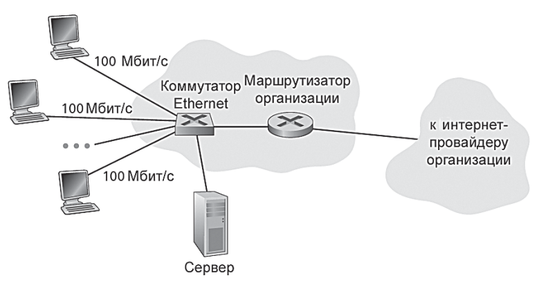

Какое определение мы можем дать интернету? К решению этого вопроса существует 2 подхода:
Некоторые основные элементы интернета:
На профессиональном жаргоне устройства или устройство подключающееся к сети называется хостом или конечной системой. Хосты (конечные системы) соединяются вместе с помощью сети линий связи и коммутаторов пакетов. По разным линиям данные могут передаваться с разными скоростями, причем скорость передачи измеряется в битах в секунду.
Когда в одной конечной системе имеются данные для отправки в другую, передающий хост сегментирует их и добавляет в каждый сегмент байты заголовка. Затем полученные порции информации (пакеты) посылаются через сеть в хост назначения, где снова собираются в исходные данные.
Коммутатор пакетов получает пакет по одной из входных линий связи и направляет его по одной из своих исходящих линий связи. Коммутаторы бывают разные, но наиболее распространенными в современном интернете являются: маршрутизаторы и коммутаторы канального уровня. Оба типа направляют пакеты в хосты их назначения. Маршрутизаторы обычно используются в ядре сети, а коммутаторы канального уровня применяются в сетях доступа.
Маршрут/путь в сети - последовательность линий связи и коммутаторов пакетов, через которые проходит пакет из отправляющей конечной системы (хоста) в принимающую.
Конечные системы (хосты) получают доступ к Интернету через поставщиков услуг интернета (интернет-провайдеров) (Internet Service Providers, ISP). Каждый интернет-провайдер сам по себе имеет сеть, состоящую из коммутаторов пакетов и линий связи.
Конечные системы (хосты), коммутаторы пакетов и другие части Интернета выполняют протоколы, которые управляют передачей и получением информации в интернете. Двумя самыми важными протоколами в интернете являются протокол управления передачей (TCP, Transmission Control Protocol) и протокол Интернета (IP, Internet Protocol)
В протоколе IP задается формат пакетов, которые передаются между маршрутизаторами и конечными системами. Совокупность (стек) основных протоколов Интернета известна как TCP/IP.
В связи со значимостью протоколов для Интернета важно, чтобы все договорились о том, что делает каждый протокол, тогда пользователи могут создавать взаимодействующие системы и изделия. Вот где вступают в действие стандарты. Интернет-стандарты разрабатываются инженерным советом Интернета (IETF, Internet Engineering Task Force)
Документы стандартов IETF называются запросами на отзывы, или рабочими предложениями (request for comments, RFC). Документы RFC появились в виде общих предложений к обсуждению (отсюда их название) для решения проблем, с которыми сталкивался при разработке сетей и протоколов предшественник Интернета. Документы RFC отличаются технической направленностью и подробностью изложения. В них определяются протоколы, такие как TCP, IP, HTTP (для Всемирной паутины) и SMTP (для электронной почты). В настоящее время существует более 6000 документов RFC. В других организациях также определяют стандарты для компонентов сетей, в особенности для сетевых линий связи.
Эти приложения включают электронную почту, веб-серфинг, социальные сети, обмен мгновенными сообщениями, передача речи по IP-протоколу (VoIP), потоковое видео, сетевые игры, одноранговый совместный доступ к файлам, телевидение через Интернет (IP TV), удаленный доступ и многое-многое другое.
Все они считаются распределенными приложениями, поскольку вовлекают в работу множество конечных систем, которые обмениваются данными друг с другом. Важно, что Интернет-приложения выполняются на конечных системах, а не на коммутаторах пакетов в ядре сети. Хотя коммутаторы пакетов обеспечивают обмен данными между конечными системами, они не имеют отношения к конкретным приложениям, являющимся источниками или получателями данных.
Допустим у нас есть идея интернет-приложения. Как нам его реализовать? Т.к. приложения выполняются на конечных системах, поэтому нам следует написать приложение, которое выполняется на конечных системах. Например, мы могли бы написать программу на Python, Java или C. Поскольку мы разрабатываем распределенное интернет-приложение, программы, выполняющиеся на разных конечных системах, должны передавать данные друг другу. Но каким образом программа, выполняющаяся на одной конечной системе, отдает команду интернету доставить данные в другую программу, выполняющуюся на другой конечной системе?
Конечные системы, подсоединенные к Интернету, предоставляют интерфейс программирования приложений (Application Programming Interface, API), который определяет, как программа, выполняющаяся на одной конечной системе, запрашивает инфраструктуру Интернета для доставки данных в конкретную целевую программу, выполняющуюся на другой конечной системе.
API Интернета является набором правил, которые должны выполняться, чтобы Интернет мог доставлять данные в целевую программу.
Предположим, Алиса хочет отправить письмо Бобу, пользуясь почтовой службой. Само собой разумеется, что наша героиня не может просто написать письмо (или данные) и бросить его из окна. Вместо этого почтовая служба требует, чтобы Алиса поместила письмо в конверт, написала полностью фамилию и имя Боба, его адрес и почтовый код, заклеила конверт, приклеила марку в верхнем правом углу и, наконец, бросила конверт в почтовый ящик. Таким образом, у почтовой службы есть свой собственный «API почтовой службы», или набор правил, которые должна соблюдать Алиса, чтобы ее письмо доставили Бобу. Аналогично для Интернета имеется API, правила которого должна соблюдать программа, отправляющая данные, чтобы эти данные были доставлены через Интернет принимающей их программе
Возможно, легче всего разобраться с понятием протокола компьютерных сетей, проведя сначала некоторые аналогии с человеком, поскольку мы, люди, выполняем протоколы постоянно. Рассмотрим, что мы делаем, когда хотим спросить у кого-нибудь, который час. Социальный протокол (или, по крайней мере, правила хорошего тона) диктует, что первый из общающихся приветствует собеседника, чтобы установить контакт. Типичным ответом на это приветствие является точно такое же сообщение «Привет». Само собой разумеется, что сердечный ответ «Привет» воспринимается как признак того, что инициатор контакта может продолжить и спросить, который час. Другой ответ на первоначальную реплику «Привет» (например, «Не беспокойте меня!», или «Я не говорю по-русски», или что-нибудь непечатное) может указывать на нежелание или невозможность общения. В этом случае согласно социальному протоколу, последующий вопрос о времени будет неуместен.
Иногда спрашивающий вообще не получает ответа на вопрос, и тогда обычно прекращает попытки узнать время у этого человека. Обратите внимание, что в нашем социальном протоколе существуют специальные сообщения, передаваемые нами, и определенные действия, выполняемые в ответ на полученные ответные сообщения или другие события (например, отсутствие ответа в течение некоторого заданного времени). Несомненно, передаваемые и получаемые сообщения, а также действия, предпринимаемые, когда отправляются или принимаются эти сообщения либо возникают другие события, играют центральную роль в социальном протоколе. Если люди выполняют разные протоколы (например, если один человек воспитан, а другой нет или если один знает, что такое время, а другой не имеет о нем представления), протоколы не взаимодействуют, и никакую полезную работу выполнить невозможно. То же самое справедливо в сетях — для выполнения задачи двум (или более) взаимодействующим объектам необходимо выполнять один и тот же протокол.
Давайте рассмотрим второй пример аналогии с людьми. Предположим, вы находитесь в классе учебного заведения (например, в компьютерном классе школы!). Учитель что-то бубнит о протоколах, а вы ничего не понимаете. Учитель останавливает свой монолог, чтобы задать вопрос: «Есть вопросы?» (сообщение, которое передается всем не спящим студентам и принимается ими). Вы поднимаете руку (передавая неявное сообщение учителю). Ваш учитель подтверждает улыбкой, что увидел ваш сигнал, говоря: «Да…» (переданное сообщение, поощряющее вас задать свой вопрос — учитель любит, когда ему задают вопросы), и затем вы задаете свой вопрос (т. е. передаете свое сообщение учителю). Учитель слышит ваш вопрос (принимает сообщение-вопрос) и отвечает (передает ответ вам). Еще раз мы видим, что передача и прием сообщений, а также набор выполняемых при этом общепринятых действий составляют суть данного протокола вопросов-и-ответов.
Сетевой протокол похож на социальный протокол, только объектами, обменивающимися сообщениями и выполняющими действия, в данном случае являются аппаратные или программные компоненты некоторого устройства (например, компьютера, смартфона, планшета, маршрутизатора или любого другого, обладающего возможностью работы в сети). Все действия в Интернете, предпринимаемые двумя или более взаимодействующими удаленными объектами, регулируются протоколом.
Например, аппаратным образом реализованные протоколы в двух физически соединенных компьютерах управляют потоком данных по «проводу» между двумя сетевыми интерфейсными платами; протоколы, отслеживающие перегрузки сети в конечных системах, управляют скоростью передачи пакетов между отправителем и получателем; протоколы в маршрутизаторах определяют путь пакетов от источника к приемнику.
В качестве примера протокола компьютерной сети, который вам, вероятно, знаком, рассмотрим, что происходит, когда вы отправляете запрос на веб-сервер, то есть, когда вы набираете URL-адрес веб-страницы в своем веб-браузере (смотреть рис. выше). Сначала ваш компьютер передает сообщение с запросом о подключении на веб-сервер и ожидает ответа. Веб-сервер в итоге получает ваше сообщение с запросом на подключение и возвращает ответное сообщение о подключении. Зная, что теперь можно запросить веб-документ, ваш компьютер посылает затем имя веб-страницы, которую он хочет получить с веб-сервера, в сообщении GET. Теперь, наконец, веб-сервер возвращает веб-страницу (файл) в ваш компьютер.
Протокол определяет формат и порядок сообщений, которыми обмениваются два или более взаимодействующих объектов, а также действия, предпринимаемые при передаче и/или приеме сообщения либо при возникновении другого события.
Вспомните из предыдущего раздела, что на профессиональном жаргоне компьютеры и другие устройства, подключенные к Интернету, часто называют конечными системами. Это объясняется тем, что они находятся на внешнем краю Интернета. К конечным системам относятся настольные компьютеры (под управлением операционных систем Windows, Mac и Linux), серверы (например, почтовые и веб-серверы), а также мобильные компьютеры (включая ноутбуки, смартфоны и планшеты). Кроме того, в качестве конечных систем к Интернету присоединяется растущее число нетрадиционных устройств.
Конечные системы называются также хостами, так как на них находятся (т. е. выполняются) прикладные программы, такие как веб-браузер, приложение веб-сервера и клиентская программа электронной почты или программное обеспечение почтового сервера. В этой книге термины «хосты» и «конечные системы» взаимозаменяемы; а именно хост = конечная система. Хосты иногда дополнительно подразделяются на две категории: клиенты и серверы. Проще говоря, клиентами, как правило, являются настольные и мобильные персональные компьютеры, смартфоны и другие устройства, тогда как серверы — это обычно более мощные машины, которые хранят и рассылают веб-страницы, передают потоковое видео, перенаправляют электронную почту и выполняют другие операции. Сегодня большинство серверов, с которых мы получаем результаты поиска, электронную почту, веб-страницы и видео, находятся в больших центрах обработки данных (дата-центрах). Например, Google имеет 30–50 центров обработки данных, причем во многих из них находится более сотни тысяч серверов.
Сеть доступа — сеть, которая физически соединяет конечную систему с первым маршрутизатором (также известным как «граничный маршрутизатор») на пути от конечной системы к любой другой удаленной конечной системе.
Рассмотрим типы сетей доступа, а именно:
Сегодня двумя доминирующими типами широкополосного доступа в Интернет по месту жительства являются абонентская цифровая линия (digital subscriber line, DSL) и кабель. Обычно квартира (или другое местопребывание) получает DSL-доступ в Интернет от той же телефонной компании, которая предоставляет проводную местную связь. Таким образом, когда используется технология DSL, телефонная компания клиента является также и поставщиком услуг Интернета. Как показано на рис. ниже, DSL-модем каждого клиента использует существующую телефонную линию (медный провод в виде витой пары) для обмена данными с мультиплексором доступа по абонентской цифровой линии (DSLAM), находящимся в местном центральном офисе телефонной компании. Домашний DSL-модем принимает цифровые данные и преобразует их в высокочастотные тональные сигналы для передачи по телефонным проводам в центральный офис; аналоговые сигналы из множества таких домов преобразуются обратно в цифровой сигнал в DSLAM.
По абонентской телефонной линии одновременно передаются как данные, так и традиционные телефонные сигналы, которые кодируются с разными частотами:
При таком подходе один DSL-канал делится на три отдельных для того, чтобы его могли одновременно совместно использовать телефонные вызовы и Интернет-подключение.
На стороне клиента разветвитель разделяет поступающие в квартиру сигналы данных и телефонных вызовов и направляет сигнал данных в DSL-модем. На стороне телефонной компании, в центральном офисе, мультиплексор доступа по цифровой абонентской линии (DSLAM) разделяет сигналы данных и телефонных вызовов и передает данные в Интернет. К одному мультиплексору DSLAM подключены сотни или даже тысячи семей.
В стандартах DSL определены скорости передачи, равные 12 Мбит/с на входе и 1,8 Мбит/с на выходе, а также 24 Мбит/с для входных данных и 2,5 Мбит/с для выходных данных. Так как скорости передачи исходящих и входящих данных разные, говорят, что доступ асимметричный. Фактические скорости передачи входных и выходных данных могут быть меньше скоростей, приведенных выше, так как поставщик DSL-служб может намеренно ограничивать скорости обмена данными домашних пользователей, если предоставляются многоуровневые услуги (разные скорости, доступные по разным ценам) либо по причине ограничения максимальной скорости передачи в зависимости от расстояния между домом и центральным офисом, пропускной способности витой пары и уровня электрических помех. Разработчики рассчитывали, что DSL будет применяться на коротких расстояниях между квартирами и центральным офисом; в целом, если место проживания находится далее 8–16 км от центрального офиса, следует использовать альтернативные способы доступа в Интернет.
В то время как технологией DSL используется существующая местная инфраструктура телефонной компании, кабельный доступ в Интернет организуется с помощью существующей кабельной телевизионной инфраструктуры, предоставленной компанией кабельного телевидения. Именно от нее пользователь получает кабельный доступ в Интернет. Как показано на рис. ниже, головная кабельная станция посредством оптоволоконного кабеля подключается к разветвлениям уровня района или квартала, от которых дальше идет обычный коаксиальный кабель, используемый для подключения отдельных домов и квартир. Каждым районным разветвлением обычно поддерживается от 500 до 5000 домов. Так как в этой системе используются и волоконно-оптические, и коаксиальные кабели, ее часто называют гибридной оптико-коаксиальной (hybrid fiber-coaxial, HFC) кабельной сетью.
Для кабельного доступа в Интернет требуются специальные модемы, называемые кабельными модемами. Как и в случае с DSL-модемом, кабельный модем обычно является внешним устройством и подсоединяется к домашнему персональному компьютеру через Ethernet-порт. Терминальная станция кабельных модемов (Cable modem termination system, CMTS) выполняет аналогичные функции, что и мультиплексор DSLAM в DSL-сети — преобразует исходящий аналоговый сигнал множества домашних кабельных модемов в цифровой формат. Кабельные модемы делят гибридную опто-коаксиальную кабельную сеть на два канала, нисходящий и восходящий. Как и в случае DSL, доступ обычно асимметричный: для нисходящего канала, как правило, выделяется более высокая скорость передачи данных, чем для восходящего. Стандартом DOCSIS 2.0 определяются стандартные скорости для нисходящего потока данных — до 42,8 Мбит/с и для восходящего потока данных — до 30,7 Мбит/с. Как в случае DSL-сетей, максимально доступная скорость может быть нереализуема из-за более низких скоростей передачи данных, обусловленных договором или повреждениями средств коммуникации.
Важная особенность кабельного доступа в Интернет состоит в том, что он является совместно используемым средством вещания. В частности, каждый пакет, передаваемый головной станцией, путешествует в нисходящем направлении по каждому каналу во все дома, а каждый пакет, передаваемый домом, путешествует по восходящему каналу в головную станцию. По этой причине, если несколько пользователей одновременно загружают видеофайл по нисходящему каналу, фактическая скорость передачи данных, с которой каждый пользователь принимает свой видеофайл, значительно меньше, чем суммарная скорость передачи нисходящих данных по кабелю. С другой стороны, если имеется лишь несколько активных пользователей и все они путешествуют по Интернету, то каждый может фактически загружать веб-страницы при максимальной скорости передачи нисходящих данных по кабелю, так как веб-страницы редко запрашиваются точно в одно время. Поскольку канал восходящих данных также используется совместно, необходим протокол распределенного множественного доступа, чтобы координировать передачи данных и избегать конфликтов.
Хотя в США в настоящее время DSL и кабельные сети составляют более 90 процентов домашнего широкополосного доступа в Интернет, перспективной технологией, которая обеспечивает еще более высокие скорости передачи данных, является развертывание оптоволоконных линий до самой квартиры (Fiber To The Home, FTTH). Как следует из самого названия технологии, идея FTTH проста — предоставление волоконно-оптического соединения от центрального офиса напрямую в дом.
Существует несколько конкурирующих технологий, использующих оптические соединения между центральным офисом и домами. Простейшая оптическая распределительная сеть называется прямой волоконно-оптической сетью, с одним волоконно-оптическим кабелем, выходящим из центрального офиса, для каждого дома. Более распространенный вариант, когда каждый волоконно-оптический кабель, выходящий из центрального офиса, на практике совместно используется множеством зданий; только после того, как кабель доходит достаточно близко до домов, он разделяется на отдельные для каждого конкретного клиента.
Существует две конкурирующие сетевые архитектуры с распределением данных по оптическим каналам, которые выполняют такое разделение: активные оптические сети (active optical networks, AON) и пассивные оптические сети (passive optical networks, PON). По существу AON — это переключаемый Ethernet. На рис. ниже показана технология развертывания волоконной оптики до квартиры (FTTH), использующая архитектуру распределения PON.
В каждом доме имеется терминатор оптической сети (ТОС), который соединяется по выделенному волоконно-оптическому кабелю с районным разветвителем. Данное устройство соединяет ряд домов (обычно менее 100) с одним совместно используемым оптическим кабелем, который, в свою очередь, подключен к терминатору оптической линии (ТОЛ) в центральном офисе телекоммуникационной компании. ТОЛ, обеспечивающий преобразование между оптическими и электрическими сигналами, соединяется с Интернетом через маршрутизатор телекоммуникационной компании. В доме пользователи подключают к ТОС домашний маршрутизатор (обычно беспроводной) и получают доступ к Интернету через него. В архитектуре PON все пакеты, передаваемые из ТОЛ в разветвитель, дублируются в разветвителе (аналогично головной кабельной станции).
Технология FTTH позволяет предоставлять доступ в Интернет со скоростями вплоть до нескольких гигабит/с. Однако большинство Интернет-провайдеров, работающих по технологии FTTH, предлагают варианты доступа с разной скоростью, при этом, чем выше скорость, тем больше цена. Средняя скорость передачи входящих данных для пользователей технологии FTTH в США составляла в 2011 году 20 Мбит/с (по сравнению с 13 Мбит/с для сетей с кабельным доступом и менее чем 5 Мбит/с для технологии DSL).
В корпоративных и университетских городках и все в большей степени в домашних условиях для подключения конечных систем к граничным маршрутизаторам используются локальные вычислительные сети или ЛВС (Local Area Networks, или LAN). Хотя существует много типов технологий ЛВС, Ethernet является безоговорочно самой распространенной в корпоративных, университетских и домашних сетях. Как показано на рис. ниже, пользователи Ethernet применяют витую медную пару для подключения к Ethernet-коммутатору.
Ethernet-коммутатор или сеть таких взаимосвязанных коммутаторов затем в свою очередь соединяется с более крупной сетью Интернет. Используя Ethernet, пользователи обычно имеют доступ к Ethernet-коммутатору на скорости 100 Мбит/с, тогда как для серверов может обеспечиваться доступ на скорости 1 Гбит/с или даже 10 Гбит/с.
Несмотря на то, что Ethernet и Wi-Fi-сети первоначально были разработаны как корпоративные, в последнее время они стали достаточно широко применяться в качестве компонентов домашних сетей. Во многих домах абонентам предоставляется широкополосный доступ по кабельным модемам или DSL совместно с этой достаточно недорогой технологией ЛВС для создания мощных домашних сетей. На рис. ниже представлена типичная домашняя сеть, состоящая из беспроводного ноутбука, а также проводного персонального компьютера, базовой станции (точки доступа к беспроводной сети), которая соединяется с ноутбуком, кабельного модема, предоставляющего широкополосный доступ в Интернет, и маршрутизатора, связывающего базовую станцию и стационарный персональный компьютер с кабельным модемом. Такая сеть позволяет членам семьи иметь широкополосный доступ в Интернет, как со стационарного персонального компьютера, так и с ноутбука, который можно перемещать при этом по комнатам.
Все больше растет количество таких устройств, как смартфоны и планшеты под управлением операционных систем iOS, BlackBerry и Android. Такие аппараты применяются для отправки почты, просмотра веб-страниц, общения в Twitter, загрузки музыки и используют ту же самую беспроводную инфраструктуру, которая применяется в сотовой телефонии для отправки/получения пакетов через базовую станцию, обслуживаемую оператором мобильной связи. Но, в отличие от технологии Wi-Fi, в данном случае пользователь может находиться на расстоянии нескольких десятков километров от базовой станции (а не десятков метров).
Телекоммуникационные компании вложили огромные инвестиции в беспроводные мобильные сети третьего поколения (3G), которые обеспечивают доступ в Интернет, используя беспроводные технологии доступа с коммутацией пакетов на скоростях, превышающих 1 Мбит/с. Более того, уже разработаны сети четвертого поколения (4G), использующие технологии мобильного доступа на более высоких скоростях.
Технология LTE (Long-Term Evolution, буквально с англ. — долговременное развитие) своими корнями уходит в 3G-технологию и может потенциально предоставлять скорости, превышающие 10 Мбит/с. И уже в некоторых рекламных объявлениях сообщается о входящих скоростях в несколько десятков Мбит/с.
В предыдущем подразделе мы сделали краткий обзор некоторых наиболее важных технологий сетевого доступа в Интернет. Когда мы описывали эти технологии, мы также упоминали используемые физические среды передачи данных. Например, мы сказали, что технология HFC использует комбинацию оптоволоконного и коаксиального кабелей. Мы также упомянули, что в DSL и Ethernet применяется медный кабель (или медную витую пару), а в сетях мобильного доступа — радиочастотный сигнал. В этом подразделе мы дадим краткое описание этих и других сред передачи, которые чаще всего используются в Интернет.
Для того чтобы определить, что подразумевается под понятием физической среды, давайте рассмотрим короткую жизнь одного бита. Представим себе бит, путешествующий от одной конечной системы к другой сквозь сеть каналов и маршрутизаторов. Несчастный бит толкают и передают несчетное число раз. Исходная конечная система вначале передает бит, вскоре после этого первый маршрутизатор на пути получает его; затем он передает бит дальше, вскоре после этого второй маршрутизатор его получает и так далее. Таким образом, наш бит, путешествуя от источника к месту назначения, проходит несколько пар «отправитель-получатель». В каждой такой паре он пересылается с помощью распространяемых электромагнитных волн либо с помощью оптического импульса через физическую среду. Последняя может принимать различные формы, в том числе меняться для каждой пары «отправитель-получатель». Примеры физической среды — это витая пара медной проволоки, коаксиальный кабель, многомодовый оптоволоконный кабель, наземный радиочастотный канал и спутниковый радиоканал. Физическая среда делится на две категории: проводная среда и беспроводная среда. В проводной среде волны распространяются по твердому носителю, такому, как оптоволоконный кабель, медная витая пара или коаксиальный кабель. В беспроводной среде волны распространяются в атмосфере или в окружающем пространстве, например в беспроводной ЛВС или в цифровом спутниковом канале.
Но перед тем как рассмотреть некоторые характеристики различных типов сред, давайте скажем пару слов об их стоимости. Фактическая стоимость физического соединения (медного кабеля, оптоволоконного кабеля и так далее) обычно значительно меньше, чем у других компонентов сети. По этой причине при строительстве зданий очень часто одновременно прокладываются все виды кабелей: медная пара, оптоволокно, коаксиальный кабель, и даже если первоначально используется один из носителей, не исключена возможность, что в ближайшем будущем может возникнуть потребность в другом и будут сэкономлены немалые средства, так как нужный кабель уже проложен.
Ядро сети набор коммутаторов пакетов и каналов связи, которые взаимодействуют с конечными системами Интернета. На рис. ниже ядро сети выделено жирными линиями.

Конечные системы обмениваются друг с другом сообщениями, используя сетевые приложения. Сообщения могут содержать все что угодно, любую информацию, которую разработчик приложения пожелает туда поместить. Иногда они выполняют функции управления (например, сообщение «Привет» в нашем примере с рукопожатием на рис.), иногда содержат данные, например почтовое сообщение, рисунок в формате JPEG, либо аудиофайл в формате MP3.
Для того чтобы отослать сообщение от хоста-источника в хост-приемник, оно разбивается на более мелкие порции данных, называемые пакетами. На пути от источника к приемнику каждый пакет проходит через линии связи и коммутаторы (среди которых основными типами являются маршрутизаторы и коммутаторы канального уровня). Пакеты передаются по каждой линии связи с максимальной скоростью, которую может обеспечить данная линия. Поэтому, если исходная конечная система либо коммутатор отсылает пакет длиной \(L\) бит через соединение со скоростью \(R\) бит/с, то время передачи пакета равно \(L/R\) секунд.
Большинство коммутаторов пакетов используют так называемую передачу с промежуточным накоплением. Промежуточное накопление означает, что коммутатор пакетов должен сначала принять пакет целиком перед тем, как он начнет передавать в выходную линию связи его первый бит.
Чтобы изучить передачу с накоплением более детально, рассмотрим простую сеть, состоящую из двух конечных систем, соединенных одним маршрутизатором, как показано на рис. ниже.
Каждый маршрутизатор обычно имеет несколько соединений, так как его задача заключается в том, чтобы перенаправить входящий пакет в исходящее соединение; в данном примере задача маршрутизатора довольно проста: передача пакета из одной линии связи (входящей) в единственную исходящую. Здесь источник отправляет три пакета, каждый из них содержит L бит. В момент времени, показанный на рис., источник отправил часть пакета 1, и она уже прибыла на маршрутизатор. Так как маршрутизатор работает по методу передачи с промежуточным накоплением, в данный момент он не может отправить биты, которые получил; вместо этого он должен сначала их сохранить (буферизовать). Только после того, как маршрутизатор получит все биты пакета, он может начать передачу (перенаправление) пакета в исходящую линию связи. Чтобы лучше разобраться, давайте подсчитаем количество времени, которое пройдет от того момента, когда источник начал отправку пакетов, до того момента, когда приемник получил весь пакет целиком.
Таким образом, общая задержка будет равна \(2L/R\). Если коммутатор перенаправлял бы биты сразу же, как они прибывают, не дожидаясь получения всего пакета, общая задержка была бы равна \(L/R\), так как не тратилось бы время на хранение битов в маршрутизаторе. Но маршрутизаторам необходимо получать, хранить и обрабатывать пакет перед тем, как его отправить. Хост приемник получит все три пакета в момент времени \(4L/R\)
Теперь перейдем к общему случаю отправки одного пакета от источника к приемнику по пути, состоящему из \(N\) соединений, каждый из которых имеет скорость \(R\), т.е. между источником и приемником \(N-1\) маршрутизатор. Применив тот же методом выведем формулу общей (сквозной) задержки прохождения от источника к приемнику
\(d_{сквозн}=N \frac{L}{R}\)
Теперь мы можем самостоятельно рассчитывать время задержки, которое необходимо для передачи \(P\) пакетов через сеть из \(N\) соединений.
Каждый коммутатор пакетов может иметь несколько соединений. Для каждого соединения у коммутатора есть выходной буфер (выходная очередь), в котором будут храниться пакеты для отправки в данную линию связи. Выходные буферы играют ключевую роль в коммутации пакетов. Если, например, прибывающий пакет нужно отправить в линию связи, но она занята передачей другого пакета, то прибывающий пакет должен встать в очередь в выходном буфере. Таким образом, в дополнение к задержкам накопления, пакеты, вставая в очередь, испытывают задержки ожидания. Эти задержки являются переменными и зависят от степени перегруженности сети. Так как размер буфера маршрутизатора не бесконечен, может наступить момент, когда он полностью заполнен прибывшими пакетами, а пакеты все поступают и поступают. В таком случае происходит потеря пакетов. Отбрасывается либо один из прибывающих пакетов, либо один из тех, которые уже находятся в очереди.
На рис. представлена простая сеть с коммутацией пакетов. Допустим, что все пакеты одной длины. Предположим, что хосты А и Б отсылают пакеты в хост Д.
Хосты сначала отсылают их по Ethernet-каналу (10 Мбит/с) на первый маршрутизатор. Маршрутизатор перенаправляет эти пакеты в канал со скоростью передачи 1,5 Мбит/с. Если в короткий промежуток времени скорость прибытия пакетов на маршрутизатор (в бит/с) превышает 1,5 Мбит/с, на нем происходит перегрузка, и пакеты встают в очередь перед тем, как их отправят в выходную линию связи. Например, если хосты А и Б каждый отправят серию из пяти пакетов в одно и то же время, то большинство из этих пакетов будут некоторое время ждать очереди. Ситуация на самом деле полностью аналогична многим каждодневным ситуациям из жизни, например, когда мы стоим в очереди перед банкоматом либо в кассе магазина.
Ранее мы упомянули, что маршрутизатор принимает пакеты, поступающие на одно из его соединений, и перенаправляет их на другое. Но как маршрутизатор определяет, куда направить пакет? На самом деле в различных видах компьютерных сетей перенаправление пакетов происходит различными методами.
Каждая конечная система в Интернете имеет свой адрес, называемый IP-адресом. Когда одна конечная система (источник) пытается отправить пакет на другую, то она включает в заголовок пакета IP-адрес места назначения. Как и в случае с почтовыми адресами, он имеет иерархическую структуру. Когда пакет прибывает на маршрутизатор, находящийся в сети, тот проверяет часть пакета, содержащую адрес места назначения и в соответствии с ним направляет пакет по необходимому пути. Если углубиться дальше, каждый маршрутизатор имеет таблицу маршрутизации, которая ставит в соответствие адреса места назначения (либо часть адресов места назначения) с исходящими соединениями маршрутизатора. Когда пакет прибывает на маршрутизатор, тот проверяет адрес и находит в таблице маршрутизации соответствующее исходящее соединение, куда и направляет данный пакет.
В Интернете существуют специальные протоколы маршрутизации, которые используются для автоматической генерации таблиц маршрутизации. Протокол маршрутизации может, например, определять кратчайший путь от маршрутизатора до любого места назначения и использовать эти результаты для конфигурации таблиц в маршрутизаторах.